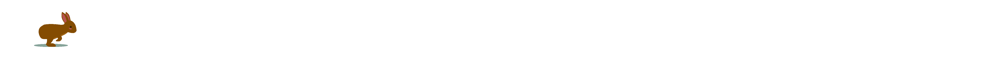

Hop on board with Tonie, your ticket to a world of creative designs!
Passionate about UX/UI design, I transitioned from the medical field to follow my love for design and all things cute! PS: I rolled up my sleeves and designed my own website using VSC, bringing my UX/UI knowledge to life with hands-on experience. 💻✨
